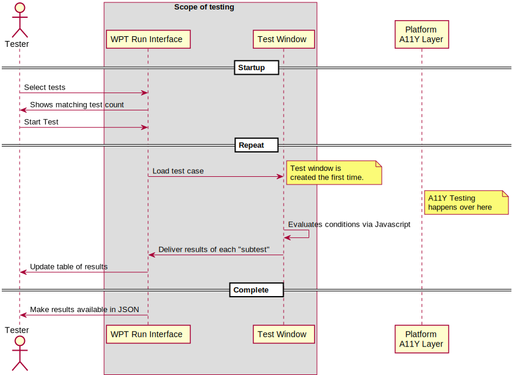
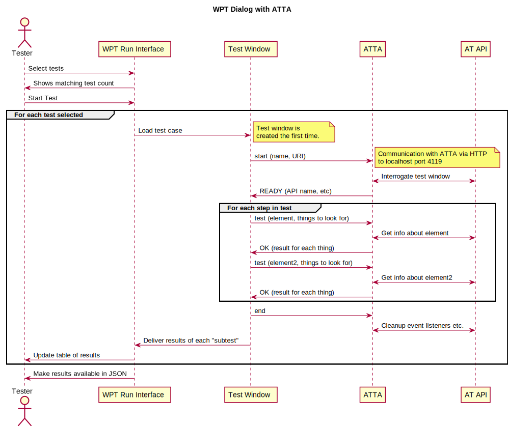
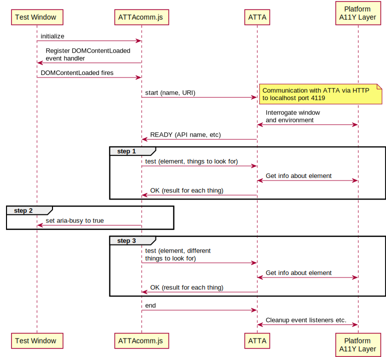

This document presents an architecture and attendant components that together enable interaction between the [[Web-Protocol-Tests]] framework, the [[testharness.js]] library that is part of that framework, and the Accessibility API on any platform. It is loosely based upon work done in the ARIA Working Group and its ancestor Protocols and Formats Working Group, but takes its inspriation from the way that the various Accessibility API Mapping specifications provide for a consistent way to expose and interrogate aspects of essentially any window on any platform.
This is a very drafty document intended to be a place to capture the definition of the architecture as it is developed. In particular, the contents of Terminology are in a state of flux, and the content of the Testable Statements is still being refined on a per-platform basis.
Historically, testing of aspects of the web platform that are outside of the user agent have been very challenging. Such testing requires specialized test rigs, platform unique instrumentation, etc. Often the use of such tooling is helpful, but still does not enable fully automated testing of those aspects in a way that is portable or scales well. In these situations, manual testing has been required. Previous testing of the ARIA Specification(s) and related accessibility api mappings fell into this category.
This specification defines a mechanism whereby any platform that supports Web Platform Accessibility and exposes that support through a platform Accessibility API can be tested automatically. In addition, it defines a simplified declarative grammar that can be used to define the tests themselves &emdash; thereby simplifying the overall task of writing the tests in the first place.
This document starts out describing the way testing at the W3C operates for most of the web platform, then illustrates the way in which it is extended through the facilities defined herein. After that it provides specifications for each of the components of the system and their interactions with one another. Finally, it discusses some ways in which the system could be extended in the future to further ease test development and make the testing more thorough.
In WPT a parent window controls the selection of tests, and then opens a child window to execute the selected tests. That child window uses a Javascript library to control test sequencing, reporting, management if windows, etc. For most tests, that model looks something like this:
Through this document and the tools that it defines, ARIA testing extends this model by connecting the child window to an ATTA ATTA through another Javascript library and a well defined protocol and set of messages. The diagram below shows this expansion.
A testable statement is a simple assertion about the behavior of a system that, when examined, should evaluate to true. In the case of ARIA specifications, the testable statements are maintained in various wikis. They include this assertion, and also include supporting information to inform the test system which aspects of the underlying systems need to be examined to evaluate the assertion.
It is possible that in some environments an ATTA will
not be be available. Consequently, additional properties of the
Testable Statement can help a manual tester understand how to
perform a similar test without ATTA assistance. Examples include
the URL and description properties
mentioned below.
Consider the following example:
== Testable Statements for ARIA 1.1 features ==
SpecURL: https://www.w3.org/TR/wai-aria11
=== gridcell ===
==== Description ====
When an element has a role with a value of 'grid', its aria-rowcount
and aria-colcount attributes descibe the dimensions of the grid
represented by that element and its contents.
Reference: #some_id
<pre>
If given
<div role='grid' id='test' aria-rowcount='3' aria-colcount='2'>
<div role='row'>
<span role='gridcell'>
<button>hello</button>
</span>
</div>
</div>
then role: grid, celcount: 2, rowcount: 3
</pre>
This example presents a description of the test's purpose, a reference to the section of the specification that defines the behavior under test, and an HTML fragment and conditions that should be met. Beyond this, the testable statement needs to show how these conditions are evaluated through each defined API mapping. An example of one such would be:
|- |rowspan=4|ATK |property |role |is |ROLE_TABLE |- |property |objectAttributes |contains |xml-roles:grid |- |property |interfaces |contains |Table |- |property |interface |contains |Selection
This is an example of a MediaWiki-style table fragment. In this case it is a series of rows and columns that describe the various items that the ATK ATTA will evaluate. The WPT ARIA test generator tool parse tables like this and generates an HTML file containing a JSON representation of the data structured in such a way that it can be processed by the ATTA Communication Module. The JSON for the examples above looks like:
{ "title": 'grid',
"reference": 'https://www.w3.org/TR/wai-aria11#some_id',
"description": "When an element has a role with a value of 'grid', its aria-rowcount and aria-colcount attributes descibe the dimensions of the grid represented by that element and its contents.",
"steps": [
{
"type": "test",
"title": "step 1",
"element": "test",
"test" : {
"ATK" : [
[
"property"
"role",
"is",
"ROLE_TABLE"
],
[
"property"
"objectAttributes",
"contains",
"xml-roles:grid"
],
[
"property"
"objectAttributes",
"contains",
"rowcount:3:,
],
[
"property"
"objectAttributes",
"contains",
"colcount:2:,
],
[
"property"
"interfaces",
"contains",
"Table"
],
[
"property",
"interface",
"contains",
"Selection"
]
],
....
}
}
]
}
The system with automatically generate [[WPT]] compatible test
cases that are formatted as defined in this specification. Test
cases can also be written by hand. Examples and a template are
available in the wai-aria/tools directory of the WPT
github repository.
The architecture of this system allows for multiple "steps" per test (see Test Steps). The current syntax structure for Testable Statements does not allow for the expression of multiple "steps". It is possible that this will be added in the future.
In the future, it is possible that that the detailed per-platform API assertions will be automatically created from a basic assertion by applying the rules from the Accessibility API Mapping document associated with each specification. See Future Plans for more information.
Each platform accessibility API has unique facilities. The per-platform API assertion structure is identical, but the contents are necessarily different. The general structure is:
TBD is a
placeholder that means
the assertions are "to be determined". An ATTA that sees a
Test Class of TBD SHOULD respond with a result of "FAIL" and a message that includes
sufficient detail about the accessibility tree associated with the element in
question that a test developer could review that information and use it to develop the correct
assertions for a given platform.exists,
is,
isNot,
contains,
doesNotContain,
isType, and
isAny.At this time commas embedded in values within a value list are NOT supported.
The remainder of this section defines the specific contents.
A test case is a series of test steps. Each step has a type, the default for which is "assertions". This section defines each of the types and how those should be expressed in a test case file.
A Simple Test is a test in which the ATTA only needs to interrogate the state of various Accessible Technology roles, states, properties, methods, or events on the platform. Each platform has its own collection of these that are documented in the various Accessibility API Mapping specifications and the specification of the platform Accessibility API.
{
"type": "test",
"title": "busy true",
"element": "test",
"test" : {
"ATK" : [
[
"property",
"interfaces",
"doesNotContain",
"Selection"
],
[
"property",
"states",
"contains",
"STATE_BUSY"
]
]
}
}
An "event" entry is a declarative way to fire an event at a specific element.
{
"type": "event",
"element": "test",
"event": "focus",
"description": "Fire a focus event at the element with an ID attribute value of 'test'"
}
A "script" step includes javascript code that will be executed in the context of the test child window.
{
"type": "script",
"title": "change busy",
"script": "{ var el = document.getElementById('test'); \
if (el) { el.setAttribute('aria-busy', true); } }"
}
ATTAcomm.js is a Javascript library that works in conjunction with the WPT testrunner.js to setup and teardown tests, communicate with the ATTA, perform local actions within a test window, and report the results of the testing to WPT. The library has a constructor that returns the object and also performs the testing if there is an ATTA available.
interface ATTAcomm {
attribute testDefinition theTest;
} ;
dictionary testDefinition {
required DOMString title;
required sequence<testStep> steps;
};
dictionary testStep {
DOMString type = "test";
required DOMString title;
required DOMString element;
FrozenArray<APImap> test;
};
dictionary APImap {
required APIList APIName;
required FrozenArray<Assertion> tests;
};
dictionary Assertion {
required assertionType type;
required assertionName name;
assertionValue value;
};
enum APIList { "MSAA", "ATK", "IAccessible2", "UIA", "AXAPI" } ;
The ATTA protocol is a simple command/response protocol relying upon HTTP. By default, an ATTA SHOULD listen on port 4119 (A11Y). It is NOT RESTful. Instead, it uses JSON messages and wraps them in a simple request where the path portion indicates that command. A typical conversation between the ATTA and the Framework might look like this:
Queries and responses are all in JSON.
The start message is designed to ensure that the ATTA is ready, that it can find the window under test, and also to help ATTAcomm understand which API and API version is supported.
The reply for this message takes the form:
READY or ERROR
{
"test": "name of the overall test case",
"url": "url from which the content is loaded"
}
{
"status": "READY",
"statusText": "",
"ATTAname": "WPT Sample ATTA",
"ATTAversion": 1,
"API": myAPI,
"APIversion": myAPIversion,
"log": "formatted logging information"
}
The test message contains one or more assertions that the ATTA is to evaluate against the Accessibility API. For each assertion in the request, the ATTA is to return information on the result of checking the assertion.
Note that in order to make the comparison of test results across platforms "apples to apples" similar, the 'rows' in the testable statement will be evaluated and their results collected into a single result for the overall 'test statement'. Any failure or other messages will be included in the result for that overall 'test statement'.
The reply for this message takes the form:
OK and
ERRORdata above. The result
objects have the following members:
{
"name": "subtest name",
"element": "id of element to check",
"data": [ [ "thingClass", "thingType", "thingAssertion", "thingValue" ],
[ "thingClass", "thingType", "thingAssertion", "thingValue" ]
]
}
{
"status": "OK",
"statusText": "",
"log": "",
"results": [
{ "result": "PASS",
"log": "Logging information about test run"
},
{ "result": "FAIL",
"message": "Some diagnostic about the failure",
"log": "detailed logging"
}
]
}
The end message just indicates the current test case is complete. It has no payload and expects nothing in the response. The ATTA SHOULD do a complete cleanup of anything in its environment before it replies to the message.
Operating systems and other platforms provide a set of interfaces that expose information about objects and events to assistive technologies. Assistive technologies use these interfaces to get information about and interact with those widgets. Examples of accessibility APIs are Microsoft Active Accessibility [[MSAA]], Microsoft User Interface Automation [[UI-AUTOMATION]], MSAA with UIA Express [[UIA-EXPRESS]], the Mac OS X Accessibility Protocol [[AXAPI]], the Linux/Unix Accessibility Toolkit [[ATK]] and Assistive Technology Service Provider Interface [[AT-SPI]], and IAccessible2 [[IAccessible2]].
An accessible object in the accessibility tree and its descendants in that tree. It does not include objects which have relationships other than parent-child in that tree. For example, it does not include objects linked via
Tree of accessible objects that represents the structure of the user interface (UI). Each node in the accessibility tree represents an element in the UI as exposed through the accessibility API; for example, a push button, a check box, or container.
An accessible description provides additional information, related to an interface element, that complements the accessible name. The accessible description might or might not be visually perceivable.
The accessible name is the name of a user interface element. Each platform accessibility API provides the accessible name property. The value of the accessible name may be derived from a visible (e.g., the visible text on a button) or invisible (e.g., the text alternative that describes an icon) property of the user interface element. See related accessible description.
A simple use for the accessible name property may be illustrated by an "OK" button. The text "OK" is the accessible name. When the button receives focus, assistive technologies may concatenate the platform's role description with the accessible name. For example, a screen reader may speak "push-button OK" or "OK button". The order of concatenation and specifics of the role description (e.g., "button", "push-button", "clickable button") are determined by platform accessibility APIs or assistive technologies.
A node in the accessibility tree of a platform accessibility API. Accessible objects expose various states, properties, and events for use by assistive technologies. In the context of markup languages (e.g., HTML and SVG) in general, and of WAI-ARIA in particular, markup elements and their attributes are represented as accessible objects.
The action taken when an event, typically initiated by users through an input device, causes an element to fulfill a defined role. The role may be defined for that element by the host language, or by author-defined variables, or both. The role for any given element may be a generic action, or may be unique to that element. For example, the activation behavior of an HTML or SVG <a> element shall be to cause the user agent to traverse the link specified in the href attribute, with the further optional parameter of specifying the browsing context for the traversal (such as the current window or tab, a named window, or a new window); the activation behavior of an HTML <input> element with the type attribute value submit shall be to send the values of the form elements to an author-defined IRI by the author-defined HTTP method.
Hardware and/or software that:
This definition may differ from that used in other documents.
Examples of assistive technologies that are important in the context of this document include the following:
In this specification, attribute is used as it is in markup languages. Attributes are structural features added to elements to provide information about the states and properties of the object represented by the element.
A set of instance objects that share similar characteristics.
A deprecated role, state, or property is one which has been outdated by newer constructs or changed circumstances, and which may be removed in future versions of the WAI-ARIA specification. User agents are encouraged to continue to support items identified as deprecated for backward compatibility. For more information, see Deprecated Requirements in the Conformance section.
Event from/to the host operating system via the accessibility API, notifying of a change of input focus.
In this specification, element is used as it is in markup languages. Elements are the structural elements in markup language that contains the data profile for objects.
A programmatic message used to communicate discrete changes in the state of an object to other objects in a computational system. User input to a web page is commonly mediated through abstract events that describe the interaction and can provide notice of changes to the state of a document object. In some programming languages, events are more commonly known as notifications.
Translated to platform-specific accessibility APIs as defined in the WAI-ARIA User Agent Implementation Guide. [[WAI-ARIA-IMPLEMENTATION]]
A document containing graphic representations with user-navigable parts. Charts, maps, diagrams, blueprints, and dashboards are examples of graphical documents. A graphical document is composed using any combination of symbols, images, text, and graphic primitives (shapes such as circles, points, lines, paths, rectangles, etc).
Indicates that the element is not visible, perceivable, or interactive to any user. An element is considered hidden if it or any one of its ancestor elements is not rendered or is explicitly hidden.
Content provided for information purposes and not required for conformance. Content required for conformance is referred to as normative.
Accessible to the user using a keyboard or assistive technologies that mimic keyboard input, such as a sip and puff tube. References in this document relate to WCAG 2.0 Guideline 2.1: Make all functionality available from a keyboard [[WCAG20]].
A type of region on a page to which the user may want quick access. Content in such a region is different from that of other regions on the page and relevant to a specific user purpose, such as navigating, searching, perusing the primary content, etc.
Live regions are perceivable regions of a web page that are typically updated as a result of an external event when user focus may be elsewhere. These regions are not always updated as a result of a user interaction. This practice has become commonplace with the growing use of Ajax. Examples of live regions include a chat log, stock ticker, or a sport scoring section that updates periodically to reflect game statistics. Since these asynchronous areas are expected to update outside the user's area of focus, assistive technologies such as screen readers have either been unaware of their existence or unable to process them for the user. WAI-ARIA has provided a collection of properties that allow the author to identify these live regions and process them: aria-live, aria-relevant, aria-atomic, and aria-busy. Pre-defined live region roles are listed in the Choosing Between Special Case Live Regions ([[WAI-ARIA-PRACTICES]], Section 5.3).
An implementing host language's primary content element, such as the body element in HTML.
Accessibility API state that is controlled by the user agent, such as focus and selection. These are contrasted with "unmanaged states" that are typically controlled by the author. Nevertheless, authors can override some managed states, such as aria-posinset and aria-setsize. Many managed states have corresponding CSS pseudo-classes, such as :focus, and pseudo-elements, such as ::selection, that are also updated by the user agent.
The Nemeth Braille Code for Mathematics is a braille code for encoding mathematical and scientific notation. See Nemeth Braille on Wikipedia.
Basic type of object in the DOM tree or accessibility tree. DOM nodes are further specified as Element or Text nodes, among other types. The nodes of an accessibility tree are accessible objects.
Required for conformance. By contrast, content identified as informative or "non-normative" is not required for conformance.
In the context of user interfaces, an item in the perceptual user experience, represented in markup languages by one or more elements, and rendered by user agents.
In the context of programming, the instantiation of one or more classes and interfaces which define the general characteristics of similar objects. An object in an accessibility API may represent one or more DOM objects. Accessibility APIs have defined interfaces that are distinct from DOM interfaces.A description of the characteristics of classes and how they relate to each other.
Usable by users in ways they can control. References in this document relate to WCAG 2.0 Principle 2: Content must be operable [[WCAG20]]. See Keyboard Accessible.
An 'owned element' is any DOM descendant of the element, any element specified as a child via
An 'owning element' is any DOM ancestor of the element, or any element with an
Presentable to users in ways they can sense. References in this document relate to WCAG 2.0 Principle 1: Content must be perceivable [[WCAG20]].
Attributes that are essential to the nature of a given object, or that represent a data value associated with the object. A change of a property may significantly impact the meaning or presentation of an object. Certain properties (for example,
A connection between two distinct things. Relationships may be of various types to indicate which object labels another, controls another, etc.
Main indicator of type. This semantic association allows tools to present and support interaction with the object in a manner that is consistent with user expectations about other objects of that type.
The primary element containing non-metadata content. In many languages, this is the document element but in HTML, it is the <body>.
The meaning of something as understood by a human, defined in a way that computers can process a representation of an object, such as elements and attributes, and reliably represent the object in a way that various humans will achieve a mutually consistent understanding of the object.
A state is a dynamic property expressing characteristics of an object that may change in response to user action or automated processes. States do not affect the essential nature of the object, but represent data associated with the object or user interaction possibilities. See clarification of states versus properties.
Any document created from a <frame>, <iframe> or similar mechanism. A sub-document may contain a document, an application or any widget such as a calendar pulled in from another server. In the accessibility tree there are two accessible objects for this situation—one represents the <frame>/<iframe> element in the parent document, which parents a single accessible object child representing the spawned document contents.
An element specified in a WAI-ARIA relation. For example, in <div aria-controls=”elem1”>, where “elem1” is the ID for the target element.
A hierarchical definition of how the characteristics of various classes relate to each other, in which classes inherit the properties of superclasses in the hierarchy. A taxonomy can comprise part of the formal definition of an ontology.
Type of DOM node that represents the textual content of an attribute or an element. A Text node has no child nodes.
Presentable to users in ways they can construct an appropriate meaning. References in this document relate to WCAG 2.0 Principle 3: Information and the operation of user interface must be understandable [[WCAG20]].
Any software that retrieves, renders and facilitates end user interaction with Web content. This definition may differ from that used in other documents.
A reference to a target element in the same document that has a matching ID
Discrete user interface object with which the user can interact. Widgets range from simple objects that have one value or operation (e.g., check boxes and menu items), to complex objects that contain many managed sub-objects (e.g., trees and grids).
This section is meant to capture plans about the evolution of this interface.